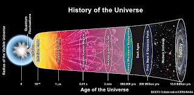

|

Güneş Sistemi’nin Oluşumu Teorileri
Büyük Patlama (Big Bang) Teorisi, evrenin ve dolayısıyla Güneş Sistemi’nin oluşumunun temelini açıklayan en kabul görmüş kozmolojik modeldir.
Bu teoriye göre evren, yaklaşık 13.8 milyar yıl önce son derece yoğun, sıcak ve küçük bir noktadan (tekillik) büyük bir patlamayla genişlemeye başlamıştır
Bu patlama uzayda gerçekleşen bir “patlama” değil, bizzat uzayın kendisinin genişlemesi anlamına gelir.
Büyük Patlama Süreci
Başlangıçta evrendeki madde ve enerji aşırı yoğun bir şekilde bir aradaydı. Patlamayla birlikte evren genişlemeye başladı, sıcaklık düşmeye başladı
ve temel parçacıklar (proton, nötron, elektron) oluştu. Zamanla bu parçacıklar birleşerek hidrojen ve helyum gibi ilk elementleri meydana getirdi.
Yaklaşık birkaç yüz milyon yıl sonra, bu gaz bulutları kütle çekimi etkisiyle yoğunlaşmaya başladı ve ilk yıldızlar ile galaksiler ortaya çıktı.
Yıldızların içinde gerçekleşen nükleer tepkimeler sonucunda daha ağır elementler oluştu. Bu yıldızlar yaşlanıp süpernova patlamalarıyla yok olduklarında,
uzaya bu ağır elementleri saçtılar.
İşte Güneş Sistemi, bu ikinci veya üçüncü nesil yıldızların kalıntılarından — yani önceki yıldızların patlamalarıyla ortaya çıkan gaz ve
toz bulutlarından — oluştu. Yaklaşık 4.6 milyar yıl önce bu gaz ve toz bulutu kendi çekim gücüyle çöktü ve merkezde Güneş, çevresinde ise gezegenler,
uydular ve diğer gök cisimleri oluştu.
|